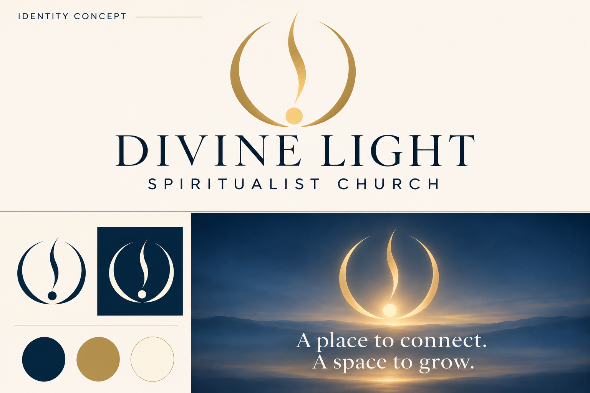
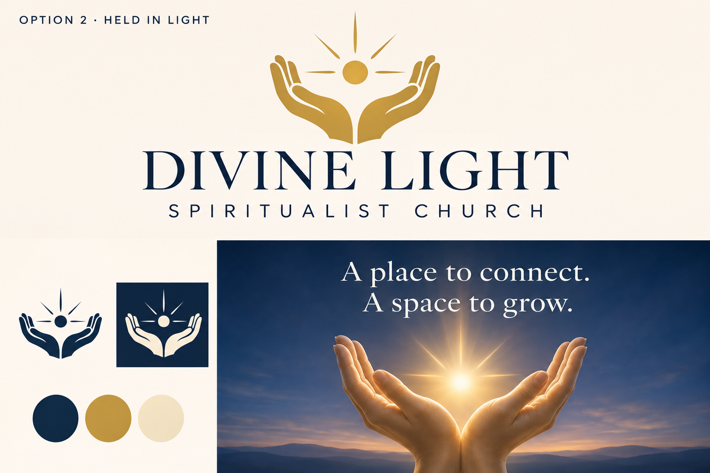
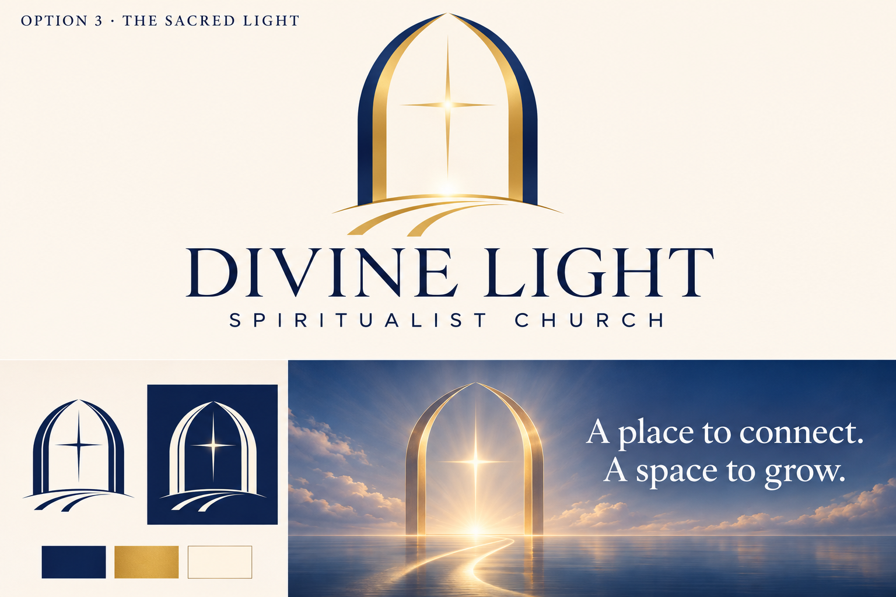

Option 1
The Light Within
An open circle and rising flame: belonging, discovery, and spiritual growth.
Explore Option 1 →Divine Light Spiritualist Church · Ajax
Explore four proposed directions for the church’s website. Each option includes the full page structure, events calendar demonstration, and content prepared for a Wix rebuild.

An open circle and rising flame: belonging, discovery, and spiritual growth.
Explore Option 1 →
Cupped hands holding light: care, compassion, and spiritual connection.
Explore Option 2 →
A luminous arch and flowing path: Divine presence and spiritual discovery.
Explore Option 3 →The original doves, refreshed with a peaceful sky-blue and white design.
Explore Option 4 →